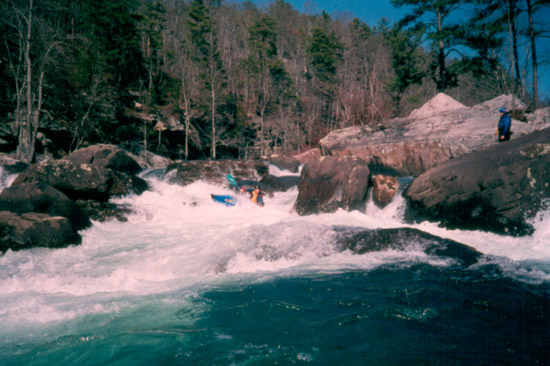
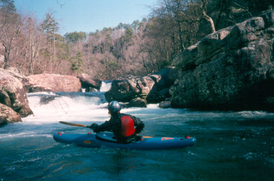
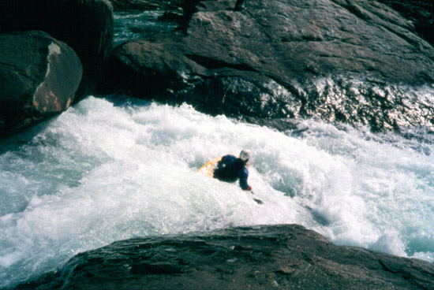

|  | Katie ? executes a smooth line on the lower part of Avalanche. All these pictures are at 5" on the Rt. 35 bridge gage. |
|  | The view back upstream of Cable Falls. The first drop is a 10' to 12' waterfall. The second is run off the boof just above the yakkers bow. If you run over the horseshoe shaped drop over his left hand, you are subject to go under the undercut behind his head at water level. |
|  | Marshall Fox looking down the barrel of the last drop on Pinball. The rock on river left just upstream of him is rather undercut. |